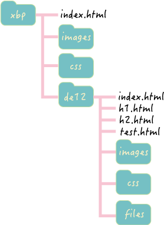

XBP第1回課題

GitHubについて 実感
- githubは難しい
- 何が難しいかというと、行っている作業が何を意味しているか分からないから
- HP作成の全体像が分からないから
- githubがHP作成の1つの方法だとすれば、他の方法との違いがわからないから
- 説明で多用される専門用語と略語の意味がわからないら など
自分で調べたこと
- GitHubという言葉を分解すると、git（ギット）のhub（ハブ）。日本語で「拠点」の「集まり」と訳すことができる。
GitHub上で、エンジニア各々が公開用のプログラムをアップして自分以外のエンジニアに共有。その後、履歴を残しながら更新したり、自分以外のエンジニアも修正を加えることが可能。
- そもそもgitとは
CUIツール（コマンドラインツール）の一種であるgitは、ソースコードのバージョンをいつ誰がどこを編集したのか、最新のバージョンはどれになるのか、などを管理するツールとして作られた。
ソースコードの管理にはSubversion（サブバージョン）などのメジャーなツールが他にもある。Gitの特徴は、ソースコードの記録や追跡などのバージョン管理が「分散型」であること。ソースコードのロールバックが簡単になったり、修正履歴を整理してログに残したりが簡単で、エンジニアがより便利に使うことができる。
（出典：modis HP githubとは？）
→ 上記の説明でもUCIツールという言葉からして、まずはわからない。ソースコード、サブバージョンもわからない。調べれば解説は出てくるが、理解できているという実感がない。
ただ、知識を集めて、共有できそうだと言うことは理解できたような気がする。
modis HP githubとは？
